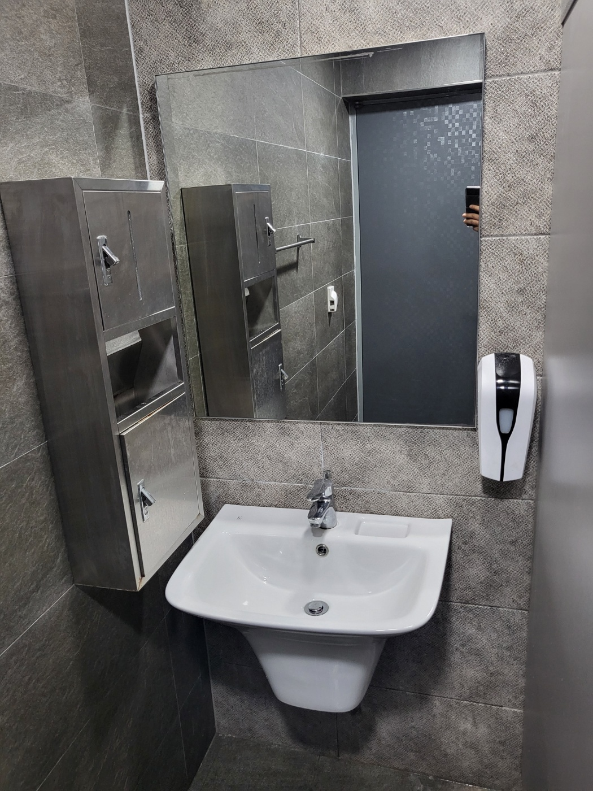
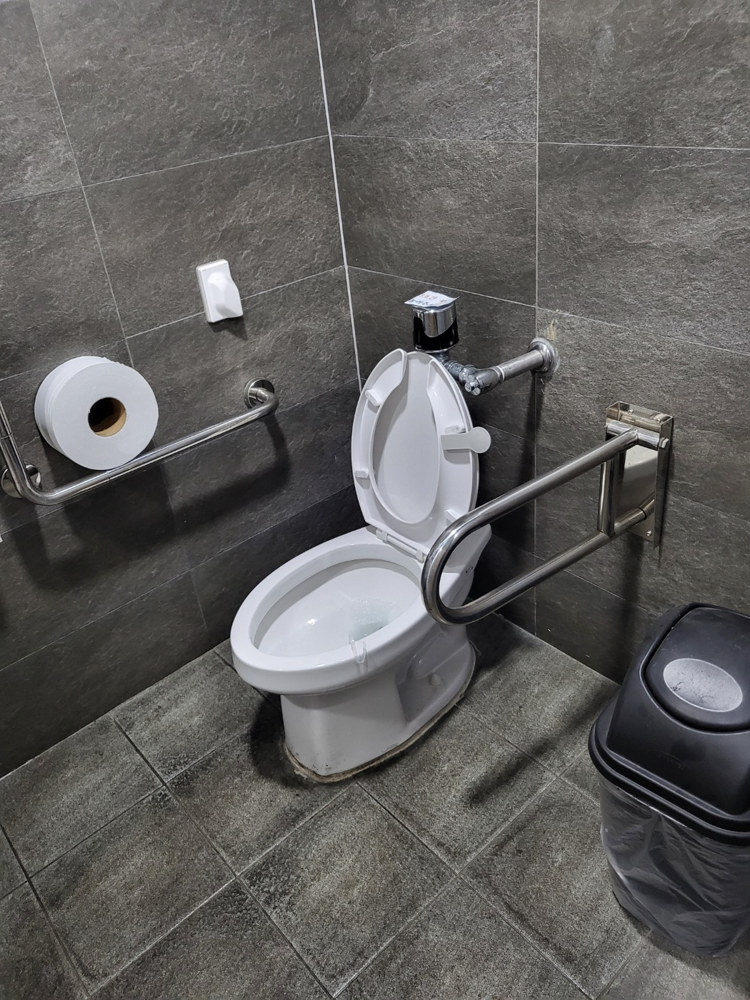
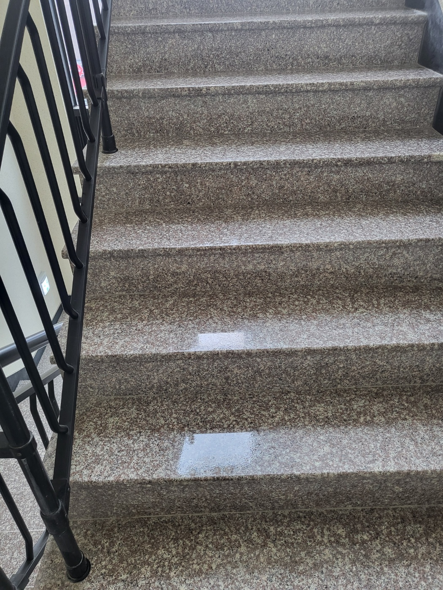
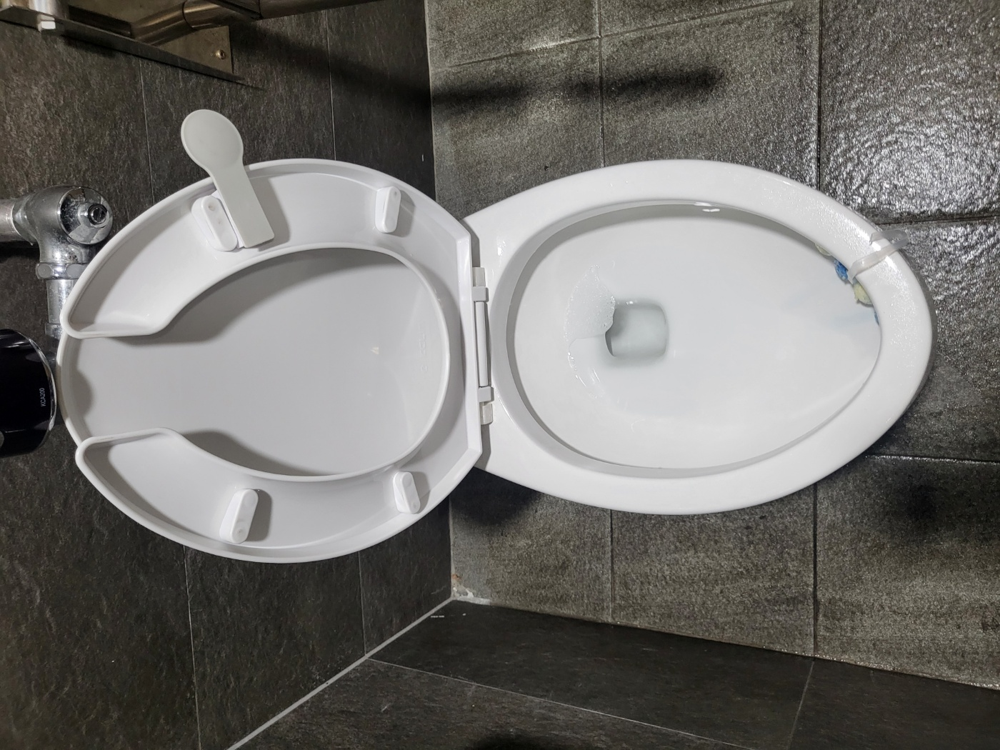
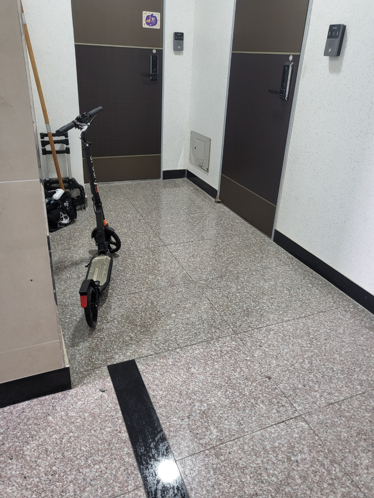
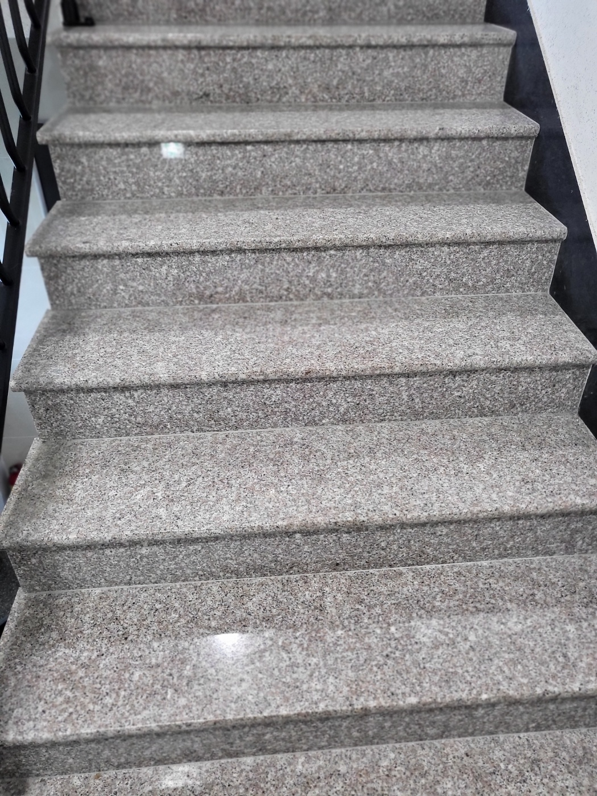
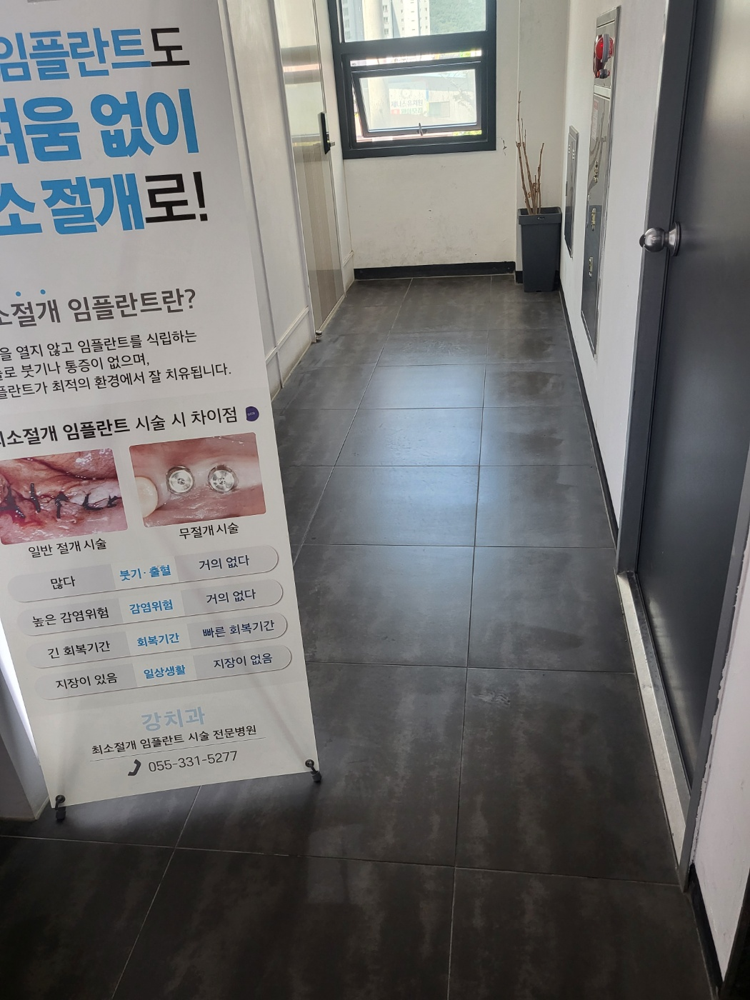

상가의 첫인상은 공용부 청결에서 시작됩니다
출입구와 엘리베이터 앞, 계단과 복도는 방문객이 가장 먼저 지나가는 공간입니다. 먼지와 발자국, 생활오염이 빠르게 쌓이기 때문에 반복적인 관리가 필요합니다.
퍼펙트케어는 현장 규모와 동선, 이용량을 확인한 뒤 공용부와 화장실까지 필요한 범위를 나누어 관리합니다.

상가 공용부 주요 관리공간



계단과 엘리베이터 앞은 반복 오염이 많은 구역입니다
상가 계단과 엘리베이터 앞은 같은 시간대에 많은 사람이 이용하고 외부 먼지가 유입되기 쉬운 곳입니다. 특히 밝은 석재 바닥은 얼룩과 발자국이 눈에 잘 띄기 때문에 주기적인 먼지 제거와 바닥 관리가 필요합니다.
현장 바닥 재질과 오염 정도에 맞춰 장비와 세제를 선택하고, 가장자리와 코너처럼 먼지가 남기 쉬운 부분까지 확인합니다.

복도와 화장실을 함께 관리하면 건물 전체 인상이 달라집니다
복도와 화장실은 입점 업체가 각각 관리하기 어려운 경우가 많아 건물 공용관리 항목으로 묶는 경우가 많습니다. 퍼펙트케어는 건물 규모와 이용량을 기준으로 필요한 관리 범위를 조정합니다.
일회성 대청소뿐 아니라 주 1회부터 주 6회까지 정기관리 상담이 가능하며, 사무실·병원·학원·상가가 함께 있는 건물도 현장 상황에 맞춰 작업 범위를 정합니다.

양산 상가청소 실제 작업사진



상가 정기청소는 현장 이용량에 맞춰 계획합니다
퍼펙트케어의 사업장 정기청소는 주 1회부터 주 6회까지 상담 가능합니다. 건물 규모, 입점 업체 수, 방문객 수, 화장실 이용량, 운영시간, 바닥 오염 정도, 계단과 복도 범위를 함께 확인해 관리 횟수를 정합니다.
양산 상가청소 무료 방문견적
현장 규모와 공용부 관리 범위를 확인한 뒤 안내드립니다. 대량건도 문제없습니다.